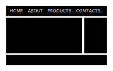

Accessible code patterns
francesco bedussi
inspired by
index
- document
- navigation
- (menu) button
- page
- paragraph
- list of products
- filter widget
- registration form
unfortunately, we have a habit of overengineering and overcomplicating things
Heydon Pickering
targeting a so-called average user is a disastrus interface design strategy, because average users do not exist
Heydon Pickering

Accessibility, why?
- It involves a lot of people: about one fifth (20%) of the population has some kind of disability
- An accessible site is also a search engine friendly site
- We have to. Governments (especially USA) are enforcing accessibility by legislation
Accessibility, for whom?
- Vision impairments
- Limited fine motor control
- Cognitive disabilities (rings a bell? :-P )
- Hearing impairments
- Older people (ourselves tomorrow)
Checklist
- Navigation without mouse
- Navigation without screen
- Content should be visually legible
- Control over automatic changes
patterns vs principles
document
document
the lang attribute
- on
htmlelement, on any inner element :lang(en)pseudo-class
allow pinch-to-zoom
don't
<meta name="viewport" content="width=device-width,
initial-scale=1.0, minimum-scale=1.0,
maximum-scale=1.0, user-scalable=no">
do
<meta name="viewport" content="width=device-width,
initial-scale=1.0">
font sizes
do
html {
font-size: 100%;
}
don't
html {
font-size: 16px;
}
responsive font-size
html { font-size: calc(1em + 1vw); }
demo
Font loading
- use proper
titleelement - use the
mainelement
bonus: print only the main element
@media print {
body > *:not(main) {
display: none;
}
}
skip to main content
- for sighted keyboard users
[href="#main"] {
position: absolute;
top: 0;
right: 100%; /* moves off screen*/
}
[href="#main"]:focus {
right: auto;
}
navigation
navigation
- a menu should look like a menu

- a menu is a
navcontaining anul - identify the current page link...
- ...but not with color alone
a navigation example
<header role="banner">
<a href="#main">
<img src="images/logo.svg" alt="My project home">
</a>
<nav>
<ul>
<li><a href="#main">home</a></li>
<li><a href="/about">about</a></li>
<li><a href="/products">products</a></li>
</ul>
</nav>
</header>
table of contents
<nav class="toc" aria-labelledby="contents-heading">
<h2 id="contents-heading">Contents</h2>
<ul>
<li><a href="#history">Our history</a></li>
<li><a href="#services">The services we offer</a></li>
<li><a href="#office">Visit our office</a></li>
</ul>
</nav>
if you hijack the link to implement smooth scroll don't forget to manage the focus
(menu) button
(menu) button
- (hamburger) icon + label + button appearance
- min touch target size: 48x48px
<nav aria-label="site">
<button aria-expanded="false">
<svg><use xlink:href="#navicon"></use></svg>
menu
</button>
<ul hidden>
<li><a href="#main">home</a></li>
<li><a href="/about">about</a></li>
<li><a href="/products">products</a></li>
</ul>
</nav>
critical JS (vanilla, to be included at the end of the page)
(function() {
var button = document.querySelector('[aria-label="site"] button');
var menu = button.nextElementSibling;
button.setAttribute('aria-expanded', 'false');
button.hidden = false;
menu.hidden = true;
button.addEventListener('click', function() {
var expanded = this.getAtrtribute('aria-expanded') === 'true';
this.setAttribute('aria-expanded', String(!expanded));
menu.hidden = expanded;
});
})();
page
page
headings
- describe nested sections
- one
h1per page - never skip a level
- never use a heading for a subtitle
video
- use captions: non-native speakers, for people watching video with audio turned off (e.g. public places), for deaf and hard of hearing
- use keyboard and screen reader accessible players (e.g. YouTube, it provides captions too)
- provide a transcript (linearized version of captions)
paragraph
paragraph
- the ideal length of a line is around 60 characters
main {max-width: 60rem;} - no justification
- line height ~1.5
p { line-height: 1.5; /*unitless!*/}
- avoid extremely high or extremely low contrast
- keep the standard link style (blue, underlined) whenever possible, eventually improve it
- never ever just remove focus style, eventually replace it
demo
list of products
list of products
- code products list as
<ul> - use self-governing grid
.grid {display: flex; flex-wrap: wrap;}
.grid li {flex-grow: 1; flex-shrink: 1; flex-basis: 10em}
demo
key information
group key pieces of information in a definition list:
<dl>
<dt>Size:</dt>
<dd>90cm x 30xm</dd>
<dt>Price:</dt>
<dd>€35.95</dd>
</dl>
images
- provide
alttext only if it adds meaning - optimize & lazy load images
cta
- if the cta is a link do not style it as a button...
- ...but use some visual clue (e.g. color) common to links, buttons, ctas to indicate their interactivity
- if cta is a link style it using tag + class selector, e.g.
a.call-to-action - buttons do not have an hand cursor
- include the product name, eventually visually hidden, in the cta label
avoid link wrapping product block
- it doesn't have a dedicated label
- produces unexpected behavior in some screen readers
- on touch device it can be pressed accidentally
use microdata to enhance SERP
<main id="main" itemscope itemtype="http://schema.org/Product">
<h1>
<span itemprop="name">Naked man in garage forecourt</span>
<a href="/artist/kenny-mulbarton">by Kenny Mulbarton</a>
</h1>
<img itemprop="image" src="images/naked-forecourt-man.jpg" alt="High-contrast black and white image of a naked man nonchalantly leaning against a petrol pump" />
<dl>
<dt>Size: </dt>
<dd>90cm × 30cm</dd>
<dt>Price: </dt>
<dd>
<span itemprop="offers" itemscope itemtype="http://schema.org/Offer">
<meta itemprop="priceCurrency" content="EUR" />
€<span itemprop="price">35.95</span>
</span>
</dd>
<dt>Rating: </dt>
<dd>
<img src="images/rating_4_5_svg" alt="" />
<span itemprop="aggregateRating" itemscope itemtype="http://schema.org/AggregateRating">
<span itemprop="ratingValue">4</span> stars, based on <span itemprop="reviewCount">13</span> reviews
</span>
</dd>
</dl>
<h2>Choose a payment method</h2>
<!-- ... -->
</main>
loading more results
- avoid infinite scroll
- prefer a "load more" button
- remember to manage focus
- and to communicate that the loading is in progress
- click on "load more"
- the button is disabled and its label changed in "loading"
- a hidden live region announces "loading more products"
- the request is handled
- on success the content is rendered
- the live region announces "products loaded"
- focus is moved to the first of the new products
- the "load more" button reverts to its original status
a filter widget
a filter widget
- leverage HTML behavior
- visually hide radio buttons and style labels based on radio buttons status
- use live regions to communicate that the content is being fetched
- do not remove the submit button
demo
a registration form
a registration form
login/register toolbar
<h1>Welcome</h1>
<div role="toolbar" aria-label="login or register">
<button aria-pressed="true">Login</button>
<button aria-pressed="false">Register</button>
</div>
<div id="forms">
<div id="login">
<form>
<!-- login form -->
</form>
</div>
<div id="register">
<form>
<!-- registration form -->
</form>
</div>
</div>
- USE LABELS!!!
- placeholders are not labels, they are hints on how to fill in the field
<fieldset>are pointless without<legend>- use
aria-required="true"and prefer it overrequiredhtml attribute - give the possibility to show password
- mark error message containers as
aria-live="assertive" - use
aria-invalid="true"on field that do not pass the validation (it can be used as a CSS selector as well) - provide a hint on why the field is invalid
let your code speak for itself